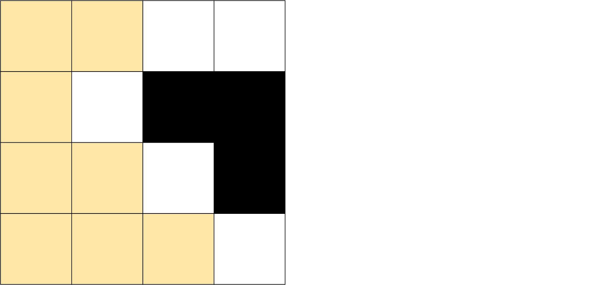
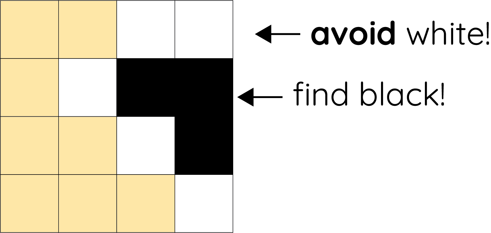
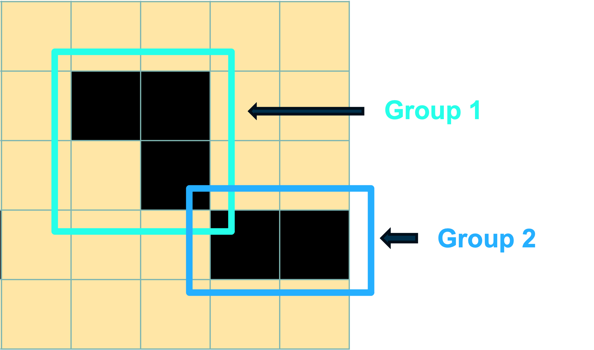
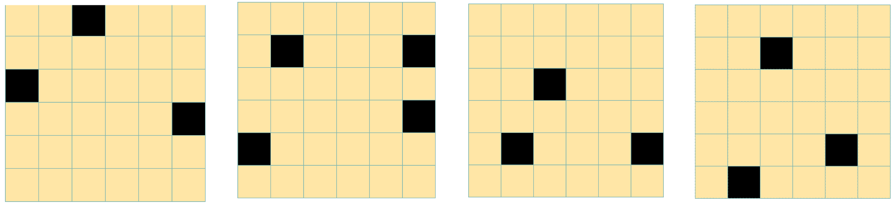

<!DOCTYPE html>
<html>
<!-- NO BOOST VERSION, NON-PRETEND -->
<head>
  <title>insight_nb_v2</title>
  <script src="../../symmetry/jquery/jquery.min.js"></script>
  <script src="../../symmetry/jspsych-6.1.0/jspsych.js"></script>
  <script src="../../symmetry/jspsych-6.1.0/plugins/jspsych-fullscreen.js"></script>
  <script src="../../symmetry/jspsych-6.1.0/plugins/jspsych-findSquares.js"></script>
  <script src="../../symmetry/jspsych-6.1.0/plugins/jspsych-instructions.js"></script>
  <script src="../../symmetry/jspsych-6.1.0/plugins/jspsych-call-function.js"></script>
  <script src="../../symmetry/jspsych-6.1.0/plugins/jspsych-survey-multi-choice.js"></script>
  <script src="../../symmetry/jspsych-6.1.0/plugins/jspsych-survey-text.js"></script>
  <script src="../../symmetry/jspsych-6.1.0/plugins/jspsych-external-html.js"></script>
  <script src="../../symmetry/p5/p5.min.js"></script>
  <link href="https://fonts.googleapis.com/css2?family=Corben&family=Quicksand&display=swap" rel="stylesheet">
  <link href="../../symmetry/style.css" rel="stylesheet" type="text/css">
  </link>
</head>

<body></body>
<div style="position:fixed;top:0;left:0;right:0;z-index:9999;background:#f59e0b;color:#1c1917;text-align:center;padding:6px 12px;font-size:0.875rem;font-weight:600;">
  DEMO VERSION — data is not saved
</div>
<div style="height:32px;"></div>
<script>

  function makeTimeline() {

    timeline = [];
    window.pretend = false; //Math.random()>0.5; // condition : pretending

    window.whitesClicked = 0;
    window.round_num = 0;
    window.np_instructions_num = 0;
    window.comprehend_np = false;
    window.p_instructions_num = 0;
    window.comprehend_p = false;
    window.ntrials = 5; // number of boards shown
    window.boardDim = 6;
    window.InitialGamePoints = 120;
    window.gamePoints = window.InitialGamePoints; // start with max points

    window.lossWhites = 1;  // loss per white square is 1 point at start
    window.gainBlacks = 0; // gain per black square is 0 points at start

    window.pointsColor =  "#FFE6A6";

    var grid_order = shuffle([...Array(window.ntrials).keys()]);

    var gridCoors = new Array(window.ntrials);
    var alreadyClicked = new Array(window.ntrials);

    gridCoors[0] = [
                    ['1', '0', '0', '0', '0', '1'],
                    ['1', '0', '0', '0', '0', '1'],
                    ['0', '0', '0', '0', '0', '0'],
                    ['1', '1', '0', '0', '1', '1'],
                    ['1', '0', '0', '0', '0', '1'],
                    ['0', '0', '0', '0', '0', '0']
                  ]
    alreadyClicked[0] = [
                      [1, 0],
                      [0, 5],
                      [3, 1],
                      [4, 5],
                    ];
    gridCoors[1] =[
                    ['0', '0', '0', '0', '0', '0'],
                    ['1', '1', '0', '0', '1', '1'],
                    ['0', '0', '0', '0', '0', '0'],
                    ['1', '0', '0', '0', '0', '1'],
                    ['1', '1', '0', '0', '1', '1'],
                    ['0', '0', '0', '0', '0', '0']
                ]
    alreadyClicked[1]= [
                        [1, 1],
                        [1, 5],
                        [3, 5],
                        [4, 0]
                      ]
    gridCoors[2] =[
                    ['0', '0', '0', '0', '0', '0'],
                    ['0', '0', '0', '0', '0', '0'],
                    ['0', '0', '1', '1', '0', '0'],
                    ['0', '0', '1', '1', '0', '0'],
                    ['1', '1', '0', '0', '1', '1'],
                    ['1', '0', '0', '0', '0', '1']
                  ]
    alreadyClicked[2]=[
                      [2, 2],
                      [4, 1],
                      [4, 5]
                    ]
    gridCoors[3] = [
                    ['0', '0', '0', '0', '0', '0'],
                    ['0', '0', '1', '1', '0', '0'],
                    ['0', '0', '1', '1', '0', '0'],
                    ['0', '1', '0', '0', '1', '0'],
                    ['0', '1', '0', '0', '1', '0'],
                    ['0', '1', '0', '0', '1', '0']
                  ]
    alreadyClicked[3]=[
                      [1, 2],
                      [4, 4],
                      [5, 1]
                      ]
    gridCoors[4] = [
                    ['1', '1', '0', '0', '1', '1'],
                    ['0', '0', '0', '0', '0', '0'],
                    ['0', '0', '0', '0', '0', '0'],
                    ['1', '0', '0', '0', '0', '1'],
                    ['1', '1', '0', '0', '1', '1'],
                    ['0', '0', '0', '0', '0', '0']
                    ]
    alreadyClicked[4] = [
                      [0, 1],
                      [0, 5],
                      [4, 0],
                      [4, 4]
                    ]
    gridCoors[5] = [
                    ['0', '1', '1', '1', '1', '0'],
                    ['0', '0', '0', '0', '0', '0'],
                    ['1', '1', '0', '0', '1', '1'],
                    ['1', '0', '0', '0', '0', '1'],
                    ['0', '0', '0', '0', '0', '0'],
                    ['0', '0', '0', '0', '0', '0']
                  ]
    alreadyClicked[5] = [
                        [0,1],
                        [2,0],
                        [3,5]
                        ]

    var grids = {
      '0': {
        'grid': gridCoors[0],
        'already_clicked': alreadyClicked[0]
      },
      '1': {
        'grid': gridCoors[1],
        'already_clicked': alreadyClicked[1]
      },

      '2': {
        'grid': gridCoors[2],
        'already_clicked': alreadyClicked[2]
      },
      '3': {
        'grid': gridCoors[3],
        'already_clicked': alreadyClicked[3]
      },
      '4': {
        'grid': gridCoors[4],
        'already_clicked': alreadyClicked[4]
      },
      '5': {
        'grid': gridCoors[5],
        'already_clicked': alreadyClicked[5]
      }
    }

    var first_instructions = {
      type: 'instructions',
      show_clickable_nav: true,

      pages: () => {

        var bonuses = window.bonuses;
        // Sort them in descending order
        var sortable = [];
        for (var subj in bonuses) {

          if (bonuses[subj].nickname) {

            bonus = 0;
            if (bonuses[subj].np) {
              bonus += bonuses[subj].np
            }

            if (bonuses[subj].j) {
              bonus += bonuses[subj].j
            }

            // if (bonuses[subj].p) {
            //   bonus += bonuses[subj].p.reduce((a, b) => a + b, 0)
            // }
            sortable.push([bonuses[subj].nickname, bonus])
          }
        }
        // console.log(sortable)
        sortable.sort(function (a, b) {return b[1] - a[1]});
        sortable = sortable.slice(0, 10);
        var rows = '';
        $.each(sortable, function (key, item) {
          var position = key + 1
          var row = '<tr>';
          row += '<td>' + position + '</td>'; // serial position
          row += '<td>' + item[0] + '</td>'; // participant name
          row += '<td>' + item[1] + '</td>'; // bonus
          rows += row + '<tr>';
        });

        if (window.np_instructions_num == 0) {

            var instruction_pages = [
              `<h1>Welcome ${window.nickname} :)</h1>

                <p>This puzzle game comprises 6 rounds in which you can earn points. <p>

                If the number of points you have at the end of the game is within the top 30% of all players, you will get a 1$ bonus!</p>

               <p>We're sorry this game <b>cannot</b> be played on an ipad or smart phone.</p>

               (We can tell if you used an ipad from your data and unfortunately we won't be able to pay you.)</p>
        `]

            instruction_pages.push(`<p>
              In this puzzle you will be shown a board of cards. <p>
              Some cards are white and some are black.<p>
              Initially, they will be covered in yellow. <p>
              <p></p>`);

            instruction_pages.push(`<p>
              Each board has 10 black cards. <p>
              Your task is to click on yellow cards to reveal all hidden black cards, touching <b>as few white cards</b> as you can. <p>
              <p></p>`);


            instruction_pages.push(`<p>
              You start the game with ${window.gamePoints}  points. <p>
              But careful: you lose 1 point for every white card you uncover. <p>
              <p></p>`);


            if (window.participant_number > 10) {
              instruction_pages.push(
                `<p>Here are the points that our best participants earned across the full game:</p>
                  <table id="scores">
                      <thead>
                          <tr>
                              <th id="corner"></th>
                              <th>Participant</th>
                              <th>Points</th>
                          </tr>
                      </thead>
                      <tbody>
                      ${rows}
                      </tbody
                      <tr>
                          <td colspan="3" style="text-align:center"></td>
                      </tr>
                      </tbody>
                  </table>
                  <br />
                  </body>`);
            }
          }
          else {
            console.log('started loop lets try')

            var instruction_pages = [`<p>Let's try again</p>`]
          }
        return instruction_pages;
      }
    }

    var second_instructions ={
      type: 'instructions',
      show_clickable_nav: true,
      pages: () => {
        window.np_instructions_num = 0; // needs resetting if previous included a multi-choice
        if (window.np_instructions_num == 0) {


          var instruction_pages = [`<p> Let's now introduce the <b>boost button</b>.<p>
              When  <b>you click it</b>, the black and white cards get a <b>point boost:</b> <p>

              <p></p>
            `];
            instruction_pages.push(`<p> Once you click the button it turns pink and: <p>
              Black cards  <b> earn you 1 </b> point when you touch them (instead of 0)! <p>
              White cards  <b>cost you 3</b> points (instead of 1)! </p>

              <p></p>
            `);
            instruction_pages.push(`<p>
            <b>The boost will take effect from the moment you click it until you finish your current board. </b> <p>
               The boost will be turned off at the start of each new board. <p>
            So, <b>once you think you know</b> where the black cards will be hidden, the boost button could earn you points!</p>
            <p></p>
            `);
        }
        else {
            var instruction_pages = [`<p>Let's try again</p>`]
          }
        return instruction_pages;
      }
    }

    var practice_gg = { // practise genuine game
      type: "findSquares",
      cheat: false,
      boost: false,
      grid: [
        ['0', '0', '0', '0'],
        ['1', '1', '1', '1'],
        ['1', '1', '1', '1'],
        ['0', '0', '0', '0']
      ],
      already_clicked: [
        [2, 3],
      ],
      text: `Find 8 hidden black cards to practise. One is already revealed!`,
      textSize: 15
    };

    var practice_bgg = { // practise genuine game with boost button
      type: "findSquares",
      cheat: false,
      boost: true,
      grid: [
        ['0', '1', '1', '0'],
        ['0', '1', '1', '0'],
        ['0', '1', '1', '0'],
        ['0', '1', '1', '0']
      ],
      already_clicked: [
        [1, 1],
      ],
      text: `Find 8 hidden black cards to practise. One is already revealed!\nTRY THE BOOST BUTTON!`,
      textSize: 17
    };

    var insight_g = {
      type: "findSquares",
      cheat: false,
      grid: [

       ['0', '0', '0', '0', '0', '0'],
       ['0', '1', '1', '1', '1', '0'],
       ['1', '0', '0', '0', '0', '1'],
       ['1', '1', '0', '0', '1', '1'],
       ['0', '0', '1', '1', '0', '0'],
       ['0', '0', '1', '1', '0', '0']

      ],
      already_clicked: [
       [3, 1],
       [1, 2],
       [2, 0],
       [1, 4],
       [3, 5],
       [4, 3],
       [5, 2],
      ],
      text: `Half of the 14 black cards are already revealed.
      Can you find the remaining 7 black cards without revealing white cards?`,
      strokeWeight:0,
      textSize: 15
    };

    var multichoice_nonpretend = {
      type: 'survey-multi-choice',
      show_clickable_nav: true,
      questions: [
        {
          prompt: `Please complete the following sentence:</br></br>
          The goal of the game is to ...`,
          options: [
            `... go <b>really fast</b> and finish the game as quick as possible`,
            '... <b>avoid</b> all the black cards',
            '... find all black cards whilst revealing as <b>few white<b> cards as possible',
            '... only click on cards in the corners'], required: true
        }
      ],
      on_finish: (data) => {
          data.correct = JSON.parse(data.responses).Q0.includes('<b>few white<b>'),
          data.test_part = 'multichoice_nonpretend',
          window.comprehend_np = data.correct;
      }
    }

    var instructions_genuine_g1 = { // first round of genuine games
      type: 'instructions',
      show_clickable_nav: true,
      pages: () => {

        points = window.maxBoardPoints - window.boardPoints;

        if (points < 0) {
          points = -1 * points;
          txt = 'gained'
        } else {
          txt = 'lost';
        }

        var instruction_pages = [`<p> Nicely done.
        If this had been a real game you would have ${txt}  ${points} point(s), so your total points after this round would have been ${window.gamePoints}.
        </p>`]

        window.gamePoints = window.InitialGamePoints;
        window.round_num = 0;

        resetBoost();resetPoints();

        instruction_pages.push([`<p> In the real game, black cards will be grouped. <p>

        <p> Each group has <b>at least 2 cards and maximally 4 cards.</b> Corners of the groups might touch. <p>

        To make things easier, <b>we start each round with one black card from each group already revealed</b>.

        <p> This way, you don't need to search for new groups, you just to reveal their size and shape.<p>

        <p></p>`])

        instruction_pages.push([`<p>In this game, you'l l see ${window.ntrials} different boards, one after the other. <p>

          <p> We labelled each board with a number. This is just so that it will be easier for you to remember which sequence of boards you played. <p>

          <p>At the start, boards look like this: as you can see, some boards have 3 groups, some have 4. <p>

          <p>Ready? Let's go!<p>

        <p></p>`])

        return instruction_pages;
      }
    }

    var instr_after_practice = { // first round of genuine games
      type: 'instructions',
      show_clickable_nav: true,
      pages: () => {

        points = window.maxBoardPoints - window.boardPoints;

        if (points < 0) {
          points = -1 * points;
          txt = 'gained'
        } else {
          txt = 'lost';
        }

        var instruction_pages = [`<p> Nicely done.
        If this had been a real game you would have ${txt}  ${points} point(s), so your total points after this round would have been ${window.gamePoints}.
        </p>`]

        window.gamePoints = window.InitialGamePoints
        window.round_num = 0;

        resetBoost();
        resetPoints();

        return instruction_pages;
      }
    }

    var instr_special_board = {
      type: 'instructions',
      show_clickable_nav: true,
      pages: () => {

        var instruction_pages = [`<p>
      This special board is similar to the others, except that here there are <b>14 black cards</b>. <p>
      We will reveal exactly <b>HALF</b> of all black cards at the start! <p>
      It's possible to complete this board without revealing <b>any</b> white cards. <p>
      Can you find the remaining 7 black cards without revealing <b>ANY</b> white cards? <p>
      Take as much time as you like. </p>
      `]
        return instruction_pages;
      }
    }

    var memory_id ={
      type: 'instructions',
      show_clickable_nav: true,
      pages: () => {
        window.np_instructions_num = 0; // needs resetting if previous included a multi-choice
        if (window.np_instructions_num == 0) {

          if (window.round_num+1 < 7) {
            var instruction_pages = [`<p> The next board is <b> board number ${window.round_num+1} </b>.<p>
              <p></p>
              Click Next to start! <p>

            `]; }

          else {
            var instruction_pages = [`<p> Let's do one more, special board! The next board is  <b> board number ${window.round_num+1} </b>.<p>
              <p></p>
              Click Next to start! <p>
            `];
          }
        }
        return instruction_pages;
      }
    }

    var instructions_cheat_practice = {
      type: 'instructions',
      show_clickable_nav: true,
      pages: () => {
        instruction_pages = [];
        instruction_pages.push(`<p> But, let's introduce a twist:
           This time we will tell you the secret of where the black squares are hidden.
           The goal of the game is that you <b> act as if you did't know this information</b>.</p>`);
        instruction_pages.push(`
           <p> We've marked the locations where black squares are hidden with a cross, so you'll
           know where they are the whole time;
           Your job is to play the full game as if these hints aren't there. <p>`);
        instruction_pages.push(`<p> One game includes a series of ${window.ntrials} boards. Your bonus will depend on how closely your actions resemble the actions of players who did not see the hints across the whole game with all  ${window.ntrials} boards.
            We will measure where and when you clicked. </p>
           <p>Do you think you can stay in your role across a full game of all ${window.ntrials} boards? Let's try!</p>`)
        return instruction_pages
      }
    };

    var multichoice_pretend = {
      type: 'survey-multi-choice',
      questions: [
        {
          prompt: `Just to make sure the instructions are clear, please complete the following sentence:</br></br>
            In this part of the experiment, my goal is to ...`,
          options: [`... click on <b>only the cross hints</b>.`,
            '... <b>avoid</b> the cross hints at all costs',
            '... play the game as if the cross hints <b>were not there</b> so that I look like someone who <b>had no hints</b>',
            '... play the game as if the cross hints <b>were there</b> so that I look like someone who <b>had hints</b>'], required: true
        }
      ],
      on_finish: (data) => {
        data.correct = JSON.parse(data.responses).Q0.includes('<b>were not there</b>');
        window.comprehend_p = data.correct;
        data.test_part = 'multichoice_pretend'
      }
    };

    var game = { // used for both genuine and pretend games
      type: "findSquares",
      cheat: jsPsych.timelineVariable('cheat'),
      grid: jsPsych.timelineVariable('grid'),
      already_clicked: jsPsych.timelineVariable('already_clicked'),
      data: jsPsych.timelineVariable('data'),
      on_finish: jsPsych.timelineVariable('on_finish')
    };

    var genuine_feedback_screen = {
      type: 'instructions',
      show_clickable_nav: true,
      pages: () => {

        points = window.maxBoardPoints - window.boardPoints;
        if (points < 0) {
          points = -1 * points;
          txt = 'gained'
        } else {
          txt = 'lost';
        }

        resetBoost();
        resetPoints();

        window.round_num += 1;
        return [
          `<p> Nicely done! You ${txt} ${points} point(s) in this round so your total points are now ${window.gamePoints}.

      This was round ${window.round_num} out of ${window.ntrials}.

      ${window.round_num < window.ntrials ? `Can you do even better? Let's continue!` : `Well done!`}</p>`]

      }
    }

    gg_vars = window.genuine_grids.map(function (i) {

      /**
       * -  Prepare each board play. For each element `i` in `window.genuine_grids`, creates an object `vars` with the following properties:
       * - `cheat`: a boolean value indicating whether this is a pretence round or not
       * - `grid`: the grid boolean matrix retrieved from the `grids` dict selecting a string number from window.genuine_grids
       * - `data`: an object containing additional data, including the `grid_number` and `test_part`
       * - `already_clicked`: the `already_clicked` key that match the selected grid
       * - `on_finish`: a function that is called when the task is finished.
       *
       * @returns {Array}
       */

      i = window.genuine_grids[i]; // select string

      vars = {
        cheat: false,
        grid: grids[i].grid,
        data: {
          grid_number: i,
          test_part: 'non-pretend'
        },
        already_clicked: grids[i].already_clicked,
        on_finish: (data) => {
          /* demo: score not saved to batch session */
        }
      };
      return vars
    });

    var genuine_games = {
      // timeline: [game, genuine_feedback_screen],
      timeline: [game, genuine_feedback_screen,memory_id], //TK
      timeline_variables: gg_vars,
      repetitions: 1,
      randomize_order: true,
    }

    var practice_cg = {
      type: "findSquares",
      cheat: true,
      practise: true,
      grid: [

        ['0', '0', '1', '1', '0', '0'],
        ['0', '0', '1', '1', '0', '0'],
        ['0', '0', '1', '1', '0', '0'],
        ['0', '0', '1', '1', '0', '0'],
        ['0', '0', '1', '1', '0', '0'],
        ['0', '0', '1', '1', '0', '0']
      ],
      already_clicked: [
        [4, 2],
        [5, 3],
      ],
      draw_attention_to_instructions_time: 3000, // exclamation mark
      text: `Find 12 hidden black squares.`
    };

    var instructions_cheat = {
      type: 'instructions',
      show_clickable_nav: true,
      pages: () => {
        return [`<p>This was just a practice round, but
        your next games will be compared to the games of people who didn't have the hints.</p>
        <p>Whenever your games are similar to the games of people who didn't have the hints, you will get 10 points.</p>
        <p><b>The number of white squares you uncover will not affect your bonus. Only your
        ability to play as if you had no hints. </b>You can take your time to think about how to best do this.</p>`]
      }
    };

    cg_vars = window.pretend_grids.map(function (i) {

      i = window.genuine_grids[i]; // select string

      vars = {
        cheat: true,
        grid: grids[i].grid,
        data: {
          grid_number: i,
          test_part: 'pretend'
        },
        already_clicked: grids[i].already_clicked,

        on_finish: (data) => {
          /* demo: data not saved to batch session */
        }
      };
      return vars
    });

    var cheat_feedback_screen = {
      type: 'instructions',
      show_clickable_nav: true,
      pages: () => {
        window.round_num += 1;
        return [`<p>This was round ${window.round_num} out of ${window.ntrials}. If this
      game looks similar to the games of players who had no hints, you will
      get 10 bonus points for this round. ${window.round_num < window.ntrials ? `Let's continue!` : `Well done!`}</p>`]
      }
    }

    var cheat_games = {
      timeline: [game, cheat_feedback_screen],
      timeline_variables: cg_vars,
      repetitions: 1,
      randomize_order: false
    }

    // timeline
    timeline.push({
      type: 'fullscreen',
      fullscreen_mode: true
    });
    // start instructions + comprehension check
    timeline.push(
      {
        timeline: [first_instructions, multichoice_nonpretend],
        loop_function: function (data) {
          window.np_instructions_num++;
          return !window.comprehend_np
        }
      }
    )
    timeline.push(
      {
        type: 'instructions',
        show_clickable_nav: true,
        pages: [`<p>Let's practise! <p>
          In this round, there will just be one block of black cards to uncover. <p>
          Don't worry about making mistakes, you'll get all your points back for the real game.</p>`]
      }
    );
    timeline.push(practice_gg); // practice genuine game for everyone
    timeline.push(instructions_genuine_g1); // nicely done
    timeline.push(memory_id);
    // timeline.push(
    //   {
    //     timeline: [instr_after_practice],
    //     loop_function: function (data) {
    //       window.np_instructions_num++;
    //       return !window.comprehend_np
    //     }
    //   }
    // )

    // defines the timeline AFTER the first practise session which both conditions have in common
    if (window.pretend) {
      // timeline.push(instructions_genuine_g1);
      timeline.push(
        {
          timeline: [instructions_cheat_practice, multichoice_pretend],  // show reward after practise of genuine game, then show instructions and comprehension check
          loop_function: function (data) {
            window.p_instructions_num++;
            return !window.comprehend_p
          }
        }
      )
      timeline.push(practice_cg)  // practise pretend game, play pretend games, show feedback screen
      timeline.push(instructions_cheat)
      timeline.push(cheat_games)
    } else {
      // timeline.push(instructions_genuine_g1);
      timeline.push(genuine_games);
      timeline.push(instr_special_board);
      timeline.push(insight_g);
    }

    var debrief = {
      type: 'survey-text',
      preamble: '<h1>Two quick questions and we are done<h1>',
      questions: [{
        prompt: `${window.pretend ? "Did you have a strategy that you used for pretending you had no hints?" : "Did you notice a pattern in how the black squares were arranged on the board? Can you name the pattern?"}`,
        pleaceholder: "your answers",
        rows: 8,
        columns: 60,
        name: 'debrief'
      }]
    };
    timeline.push(debrief);
    var worker_comments = {
      type: 'survey-text',
      preamble: '<h1>Pattern Discovery<h1>',
      questions: [{
        prompt: `<p>Do you remember in which board you noticed the pattern for the first time? Please type the number of the board. Don't worry if you can't remember or did not notice anything: just type 0.
          Your payment won't be affected. Thank you so much!</p>

          <p></p>

          `,
        pleaceholder: "your comments here",
        rows: 4,
        columns: 30,
        name: 'worker_comments'
      }]
    };
    timeline.push(worker_comments);
    var instructions = {
      type: 'instructions',
      show_clickable_nav: true,
      pages: () => {
        return [
          `<p>${window.nickname}, Your current number of points is
       ${window.gamePoints}. We will know how many points you got for pretending
       when we show your games to our next participants. We will update your bonus on the system then.
       In the meantime, thank you for your participation! Please do not close
       this window until you are sent back to Prolific.</p>`]
      }
    }
    if (window.pretend) {
      timeline.push(instructions);
    }
    return timeline
  };

  function hexToBytes(hex) {
    for (var bytes = [], c = 0; c < hex.length; c += 2)
      bytes.push(parseInt(hex.substr(c, 2), 16));
    return bytes;
  }

  function shuffle(array) {
    var currentIndex = array.length, temporaryValue, randomIndex;

    // While there remain elements to shuffle...
    while (0 !== currentIndex) {

      // Pick a remaining element...
      randomIndex = Math.floor(Math.random() * currentIndex);
      currentIndex -= 1;

      // And swap it with the current element.
      temporaryValue = array[currentIndex];
      array[currentIndex] = array[randomIndex];
      array[randomIndex] = temporaryValue;
    }

    return array;
  }

  function resetPoints(){
    window.whitesClicked = 0;
    window.boardPoints = window.maxBoardPoints;
  }

  function resetBoost(){
    window.gainBlack = 0; window.lossWhites = 1;
    window.boost = false; window.boostColor = "#FFFFFF";  window.boost_button_label = "BOOST is OFF";
  }

  function generateZeroArray(dim) {
    let arr = new Array(dim);
    for (let i = 0; i < dim; i++) {
      arr[i] = new Array(dim).fill('0');
    }
    return arr;
  }

  // function getCoordinates(v) {

  //   let array = [
  //     [1, 2, 3, 4, 5, 6],
  //     [7, 8, 9, 10, 11, 12],
  //     [13, 14, 15, 16, 17, 18],
  //     [19, 20, 21, 22, 23, 24],
  //     [25, 26, 27, 28, 29, 30],
  //     [31, 32, 33, 34, 35, 36]
  //   ];

  //   for (let i = 0; i < array.length; i++) {
  //     for (let j = 0; j < array[i].length; j++) {
  //       if (array[i][j] === v) {
  //         return [i, j];
  //       }
  //     }
  //   }
  //   return null;
  // }

  // function setCoordinates(coords) {

  //   /**
  //     * Sets the coordinates in a zero array of size dim to '1' otherwise '0'.
  //     *
  //     * @param {Array} coords - The coordinates to set to '1' (str).
  //     * @returns {Array} - The modified array.
  //     */


  //   let board = generateZeroArray(window.boardDim);

  //   coords.forEach(([i, j]) => {
  //     board[i][j] = '1';
  //   });
  //   return board;
  // }

  $(window).resize(function () {
    this.innerWidth = window.innerWidth;
    this.innerHeight = window.innerHeight;
    this.width = window.width;
    this.height = window.height;
  })

  window.addEventListener('load', function () {
    window.participant_number = 11;
    window.nickname = 'Demo Player';

    window.genuine_grids = ['0', '1', '2', '3', '4'];
    window.pretend_grids = ['0', '1', '2', '3', '4'];

    window.bonuses = {
      '1': { nickname: 'Player Alpha', np: 118 },
      '2': { nickname: 'Player Beta', np: 112 },
      '3': { nickname: 'Player Gamma', np: 105 }
    };

    window.genuine_log = {};
    window.cheat_log = {};
    window.np_leader = { name: 'Player Alpha', points: 118 };

    timeline = makeTimeline();
    jsPsych.init({
      timeline: timeline,
      on_finish: function () {
        jsPsych.data.addProperties({
          pretend: window.pretend,
          gamePoints: window.gamePoints,
          initial_points: window.InitialGamePoints,
          pretend_instructions: window.p_instructions_num,
          nonpretend_instructions: window.np_instructions_num
        });
        var resultJson = jsPsych.data.get().json();
        const blob = new Blob([resultJson], { type: 'application/json' });
        const url = URL.createObjectURL(blob);
        const a = document.createElement('a');
        a.href = url;
        a.download = 'demo_results_symmetry.json';
        document.body.appendChild(a);
        a.click();
        document.body.removeChild(a);
        URL.revokeObjectURL(url);
      }
    });
  });

</script>

</html>

<!--
{
  "protocol_sum": "changeToTheHashOfTheProtocolFolder",
 "participant_number":0,
  "bonuses":{}
} -->


